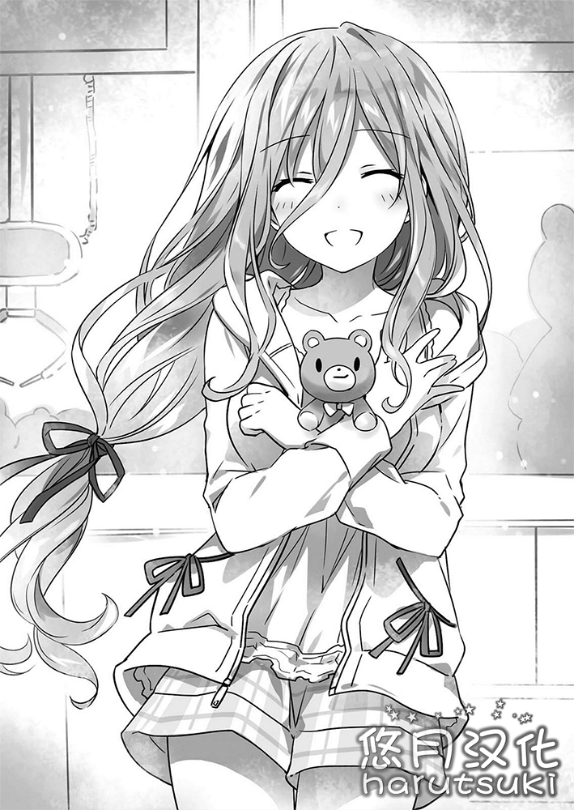
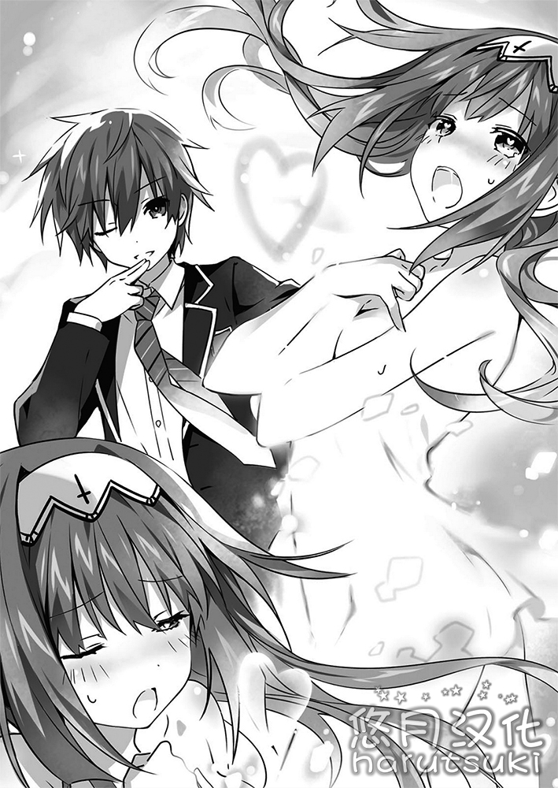

第四章 终焉的足音
「……喂，那是什么？」
「嗯？啊，那是路灯。通过灯的颜色来表明能否通过。」
「那个呢？」
「邮筒。把信放进去之后，就能送到指定的地方。」
「那么，那个呢？」
「自动售货机。把钱放进去就能买饮料。」
「那么——」
说到这里，澪停了下来。
「对不起，好像我从刚才就一直在问你。」
澪非常抱歉地说道。少年表示「这没什么。」并摇了摇头。
「别在意啦。第一次看见那些东西，要你别对它们感兴趣才是强人所难。」
说着，少年也望向了四周。
整齐排列的建筑，铺装规整的道路。电线杆等间隔地矗立在两旁，空中则遍布着电线。
以及，在这之间匆匆忙忙，往来交错的行人与车辆。虽然这对于住在附近的少年来说是司空见惯的风景，但是如果是第一次看到这番景象的话，少年也一定会表现出和澪一样的反应。
没错。自澪在少年面前出现后过了约两周，二人相互结伴，走出家门来到外面玩耍。
读遍家中藏书的澪，已经可以像在日本生活了好多年一样流畅地使用语言，而且关于礼节、举止与社会常识也已经有了一定程度的学习，所以崇宫家的监督官·真那也已经允许她外出。
虽说如此，二人所走向的自然是与发生了空间震的地方相反的方向。虽然这座受到了前所未有的大灾害袭击的城市依旧处在慌乱的气氛之中，但是人们要想生存就必须吃饭，为此就必须工作。为了完成这些事情，即使几千米的前方就有着巨大的环形山，他们也必须要找回日常生活的基石。
电视中依然在议论着空间震的事情，那场灾害催生出了怎样的悲剧也被重复播放着，但是那附近的居民们却出人意料的平静，继续着各自的生活。
「哇……诶……啊——这个我在书上看到过。」
「…………」
澪走在路上，满怀兴趣地四处观望。少年看着她，陷入了沉思。
现在的澪比起当初刚刚相遇的时候，语言变得更加熟练，也可以清晰的表达自己的意思。随着时间的推移，澪已经能够用日语来表达记忆中清晰的部分，以及当初不明其意的事情。
但是，对澪而言，她还是有太多不明白的事。
不——正确来说，正是因为变得能够以语言的形式进行了解，那些无法理解的事情才逐渐增加了。
澪不是普通的人类。岂止如此，她甚至不是通过正常的途径诞生的生物。
——「精灵」。她说过，如果用日语来表达自己的存在的话，这个词汇大概是最为接近的。
借助被称为魔术或是咒术那一类技术所孕育出来的，超常生命。
但是，从好奇心旺盛的她的背影中，却丝毫感觉不到那种险恶的气氛，不如说——
「——怎么了？」
「……哇！」
忽然被探过来窥视，少年不禁吓得抖了抖肩。澪看着那样的少年，一脸不可思议地歪起了头。
「不，不，没什么。」
「……是吗？」
澪再次不可思议地说道，接着便像想起了什么一样，端正了自己的姿态。
「比起这个，那是什么东西？」
她再次指向了什么。少年抬起头，顺着澪所指的方向看去。
那是在游戏厅的门口放置的，发出喧杂声响的机器箱子。在玻璃质的大箱子中，有好几只小玩偶排列其中，浑圆的眼睛朝行人们投去视线。
「啊，那是抓娃娃游戏机。在箱子的顶上有机械手臂对吧？从外面操作它，来抓里面的玩偶。」
「嘿诶？ 真是个有趣的东西呢。」
少年简单地对游戏进行说明之后，澪便踏着轻快的脚步，走近了抓娃娃游戏机，目不转睛地朝里面看去。
是看上了放在里面的熊玩偶吗？少年追着她的脚步走了过去，和澪一样看着箱子内部说道。
「我来给你夹出来吧？」
「……诶？」
闻言，澪抬起了头，她的表情仿佛诉说着自己的意外与惊讶。
少年边苦笑于她那副神色，边把钱投进机器，然后顺着指示音开始操作起机械臂。
十几分钟后，一发入魂……虽然是没有做到，但在钱包清空之前，少年还是设法抓到了里面的熊玩偶。
「成啦——！咋样——！」
说实话，因为经历了连续的失败，所以成功之后真是比想象的还要高兴。在玩偶掉落到出物口的瞬间，少年不顾周围人的存在，高声喊出了这番话。游戏厅里的客人和路上的行人都惊讶地看向这里，然后苦笑着走开了。
「…………」
少年面颊通红，紧缩着肩膀把熊玩偶取了出来。
「总，总之。拿好了，澪。」
「……，……？」
澪歪着头，似乎不太明白少年刚才的言行。少年好像也对此感到羞涩起来，他拉住澪的手，把熊玩偶放到她的手中。
「……？是要，给我吗？」
「嗯。就是为此才抓的呀。……还是说，你不想要？我看你这么热心地看着里面，还以为你喜欢这种……」
「喜欢……」
澪睁大双眼并重复了这个词后，注视起递到自己手中的玩偶。
「喜欢……感到喜爱的感情……对对象产生的强烈的兴趣……」
澪像是在背诵字典般断断续续地呢喃了几声后，把手中的熊玩偶抱到胸前。
「——就是那个。……嗯，这一定就是『喜欢』。对你表达感谢。表达谢意。……不对呢，应该是……」
澪一瞬间露出了似是在逡巡着思绪般的样子后，马上又再次转向少年。
「——谢谢。我很高兴。我，『喜欢』，你。」
接着，她微笑着说道。
「……诶！？」
有种，被那笑容击穿了心脏般的错觉。

因为这未曾料想的话语，少年满脸绯红地移开了视线。
这是象征着即将开始的与澪一起的生活的一页。
对于少年来说，这是无可替代的日子的开端。
——但是，少年尚未察觉。
名为澪的少女的存在所包含的意义。
以及追寻着这份意义的人们的存在。
◇
早上。在通往来禅高中的路上有几位学生。
二月的早上很冷。大家要么在制服外披着外套，要么戴着围巾，都在用自己最喜欢的方式抵御寒冷。
虽说如此，其中也是有像殿町宏人这种只在衬衫外套上制服，走在冷天下的火气正旺的少年存在的。
「早安各位。今天天气也非常宜人啊！」
边说着，殿町边向正走在路上的女生三人组挥起手。
高个子的少女，不胖不瘦的少女，以及身材矮小的眼镜少女。二年四班名人，通称·亚衣麻衣美衣。
然而平常都很精神的三人看到殿町后很冷似地拉了拉围巾。
「早上好……话说完全是阴天好吧今天。」
「话说殿町同学不冷吗？我们看着你都觉得冷。」
「小学生的时候就有这种人了。即便冬天也只穿短袖短裤。诨名乃风。」
亚衣麻衣美衣依次如此说道后，只见殿町一边哼哼地冷笑着，一边得意地挺起胸膛。
「你们已经注意到了我的狂野了吗。毕竟到头来女生就是喜欢强壮的男生嘛。今早谁在电视里这么说过。」
「……你看了？」
「没。没看。我基本只看早间新闻。」
「咱也是咱也是。啊，听说好像哪里发生了集团昏睡事件？好口怕啊——。」
说着，亚衣麻衣美衣把殿町晾在一边，滔滔不绝地聊了起来。可殿町并没有因此受到打击，大声嚷道。
「总而言之！这样一来我也可以交到女朋——阿嚏！」
殿町话还没说完就大大地打了个喷嚏。亚衣麻衣美衣她们半睁着眼，对他无语了。
「穿得那么少又感冒，你离狂野还远着呢。」
「话说回来，比起那种面儿都没见过的大人物，怎么不问问现在就站在你眼前的女生的意见啊？」
「就是就是。比如这位山吹亚衣氏，可是正对每逢季节交替必会感冒的文化系男生绝赞单相思中哦老爷。」
「你给我等下。」
突然被揭开恋情的亚衣试图摁住美衣的脖颈让她住口。但是已经察觉到了的美衣立刻把麻衣当成盾牌挡在前面躲来躲去。
而一旁被冻得发抖，不停地吸着鼻涕的殿町似乎注意到了什么，猛地睁大了眼。
「感冒……诶，原来是这么一回事啊。那个。山吹的心意我非常高兴，该说我被惊到了还是……。」
「呜哇两者根本不是一码事好伐，完全误会了！没关系，我喜欢的并不是殿町同学！」
隔着麻衣的身体从反向一侧伸出手揪住了美衣脖颈的亚衣在空闲之际这么喊道。殿町则「诶——，再让我多做会儿白日梦嘛——」地扭着身体说。
「真是的……对了殿町君，你有看到五河君吗？」
这时，捏着美衣的脸出了气的亚衣似乎想起了什么问。
「五河？没，今天到现在还没见到过他。你找他有什么事吗？」
「才没有呢，听说那个淫兽又跟时崎同学去约会了。我们只是在表示『你丫的那十香酱怎么办啊混蛋！』的无法认同的意思。」
「而且据消息灵通人士透露，好像『只有我的动物园』里又增加了新同伴的样子。」
「这次是满口古风的巨乳萝莉哦老爷。什么玩意啊。有罪。」
三人小声这么说道后，从殿町那里传来了大笑声。
「啊哈哈，你们在搞什么啊。唯独五河这种事。」
「不可能？」
「不，肯定是真的。见到他之后我就告诉你们。」
「感谢协力。」
如此这般，殿町与亚衣麻衣美衣达成了协力关系。四人像在比赛前的队伍成员相互打气一样将手叠到一起，互相看了看，喊了声「哦~！」。
忽然——下一个瞬间
呜呜呜呜呜呜呜呜呜呜呜呜呜呜呜呜呜呜呜呜呜呜呜呜呜呜呜呜呜呜呜呜呜呜呜呜呜————
仿佛在为刚才他们的动作配乐一样，警报响彻了整个城市。
「！空间震警报……！？」
「骗人的吧，真的假的？」
突如其来的警报让殿町和亚衣麻衣美衣以及周围的其他学生立刻吵嚷起来。
虽说如此，但也没有发生多明显的混乱。毕竟这里可是东京都天宫市。世界上空间震频率最高的城市，避难所普及率也是第一位。学生们经历了多次并非训练的避难，该怎么处理他们心里很清楚。
「呜哇——……真心求你别在这么冷的时候发生空间震啊——。」
「你在说什么呢啊，快点，再不避难就危险了。快去学校的避难所。」
「知道啦。」
如此这般，没有丝毫紧张感地说了几句后，她们便前往学校地下的避难所了。
尽管警报响了，但并非立刻就会发生空间震。倒不如说慌忙跑动更危险。殿町他们不慌不忙的按照顺序开始进入避难所的入口。
——这时。
「……嗯？」
正当要走路通往地下的入口时，殿町忽然停了下来。他抬头仰望天空，纳闷地眯细了眼。
「嗯？怎么了殿町同学。」
「没什么……刚才一瞬间你们有看到天上有什么东西没？」
「哈？」
听殿町这么一说，亚衣麻衣美衣抬头看起天空。然而马上就歪过了头。
「……是什么啊？」
「嗯——……怎么说呢，难道云里有巨大的战舰？之类的？」
「…………。」
亚衣麻衣美衣对殿町的发言表示无语。不，正确来说应该是稍显怜悯地看着他，同时小声在下面嘀咕起来。
「殿町同学终于连脑袋都……。」
「不，他不是那种认为有些东西只有自己才能看见的中二男生吗？」
「不管哪边都很糟糕啊——。」
「说归说至少别让我听见好吗。」
殿町半睁着眼说完后再次看向天空，疑惑地摇了摇头后钻进了避难所。
◇
——从天空，降下了人工的绝望。
Deus·Ex·Machina的空中舰。以远超人智之力所创生的几个巨大黑影，犹如撕裂云层般出现在了已无人迹的城市上空。
那副模样看起来就像默示录里的破坏者。让人想起为了将毁灭散播在丰收之地上而出现的地狱之王。
飞在空中的巨影大概有三十个。
没错。〈Ratatoskr〉所把握到的DEM社所拥有的战舰基本上全部集结在了天宫市上空。
「——来了啊。」
坐在〈Fraxinus〉的舰长席上，望着眼前的光景的琴里翘起嘴里的珍珠宝的棒棒，目不转睛盯着正前方的主屏幕。
「DEM的各位大驾光临了。所有人都点名要你哦，士道。还真是受欢迎啊你。」
然后装作开玩笑的样子边说，微微将视线转向士道。士道苦笑着耸了耸肩。
「啊啊……感动得眼泪都要出来了。只可惜感觉不合我口味。」
「啊哈哈，那就没办法了。只好请他们回去了。」
琴里如此说道，从舰长席上站起来，对着在通信机前的〈Ratatoskr〉机关成员们大声说道。
「我是〈Fraxinus〉舰长，五河琴里。首先我发自内心感谢各位的帮助。
——那么，想必已经显示在各位的显示器上了吧？我们的城市出现了一群不懂礼貌的来访者。就是那个企图用粗鲁又粗暴的做法夺走精灵之力，差劲到不行的DV男。（混沌圣歌：DV男，指对女性施加家庭暴力的男人。）
啊啊，才不要咧。难看死了。唯独这种想要用力量支配女性的男人，被抛弃的话就会像个娘们一样穷追滥打。为所欲为做了那么多令人厌恶的事，为什么还觉得自己没被厌恶啊。难以理解。是因为女性看起来都像和蔼可亲的妈妈吗？」
说着，琴里故意叹了口气，随之从通信机对面传来了低笑声。
琴里忽而又扬起了嘴角，继续说道。
「来吧，就让我们教训教训这群不知礼仪的粗暴之人吧。
让他们知道该如何正确的对待女性。
优雅的护卫方式。
——以及，战争（Date）的进行方法。」
「了解！」
像是回应琴里的宣言一样，从舰桥下段和通信机对面发出了强有力的声音。
足以把空气震得哗啦哗啦响的迫力让士道不由自主挺直了身板。
「真是激情澎湃啊……。」
「嗯，琴里也很帅哦。」
站在士道身旁的十香表示同意地点了点头。于是琴里耸了耸肩转过身来。
「如果所有人都能感受到十香心中的那份感想的话就再好不过了。毕竟让众人的战意高涨起来也是司令官的工作嘛。——但是，纯粹只是狂热的话是没用的。脑袋要冷静，内心要干脆利落，这才是我想要的。」
她一边说一边竖起一根指头。
士道轻轻叹了口气。样子就像在说我妹妹看起来贼帅。
然而，琴里微微皱了皱眉头接着又说。
「——话虽如此，但你要知道，眼下的状况不能说对我们有利。
面对敌人大概三十艘空中舰，〈Ratatoskr〉舰包含〈Fraxinus〉在内才五艘。魔术师人数就当相差近10倍好了。再加上对面恐怕有数千个〈Bandersnatch〉，至于尼别科尔，究竟会出现多少个还不清楚呢。虽说显现装置的性能方面这边更胜一筹，但从正面开战的话肯定马上就会败下阵来吧。」
「………。」
琴里这一席话令排成一排坐在舰桥的精灵们倒吸一口凉气。
琴里一边说着「但是」 一边转向所有人。
「能够打破眼下战况的——就是你们。」
依次凝视精灵们的表情，琴里继续说道。
「……我深知身为保护精灵的组织的司令官却向精灵求助是件倒果为因的事。我也真的很不好意思。
可是——拜托了。请把你们的力量借给我。作为〈Ratatoskr〉的司令官……」
琴里说到这里，嘴里又念叨说「嗯嗯嗯，不对……」，并低下了头。
「作为士道的妹妹，我请求你们。——救救，我的哥哥。」
「当然了！」
十香向前踏出一步提高音量道。
于是，其他精灵们紧接其后点了点头。
「也请务必让我们……出一份力。」
「没错啊！倒不如说把我们晾在一边的话我们才会生气哦！」
「你说让众人战意高涨是司令官的工作？啊哈哈，那妹妹酱现在不是非常有司令官的味儿嘛。」
「各位……。」
大家的话让琴里热泪盈眶——可她马上就用手背擦掉了。
然后为了重新振作起来而清了清嗓子，摆出下定了决心的表情再次抬起头。
「——谢谢。不过，正因如此，接下来的行动才非常重要。——二亚，我可以认为刚才这些话没有在被〈神蚀篇帙〉偷窥吧？」
琴里如此问道后，二亚动作夸张的点了下头。
「嗯，现在的〈神蚀篇帙〉在搜索上会很花时间，已经没问题了。……你想用什么诡计啊？是准备用六六的天使打开任意门瞄准要害打他们一个出其不意吗？」
二亚一边摆出Shadowboxing般的动作说。于是六喰「嗯……」的一声，眉头挤出倒八字。（狐狸的须02：Shadowboxing是一种拳击练习手段，即假想一个敌人来运动拳脚。）
「抱歉，此举六儿或已无法做到。自灵力被封印，远距离移动已变得不易……。」
「啊，这样啊？」
「话说，就算行得通我也不会允许你这么做的。毕竟对方肯定也早已有所准备，鬼知道会有什么样的陷阱。穿过『孔』的瞬间就被艾伦所感知，然后被取下首级——这种事也是可能发生的。」
琴里耸了耸肩说完后，视线落到折纸跟真那身上。
「比起这个，能讲给我听一听吗，折纸，真那。就是关于能将那个碍眼的〈Bandersnatch〉无力化的方案。」
「我知道了。」
折纸和真那看了看对方，轻轻点了点头，回答了琴里的话。
「但是在这之前，我有件事想向鞠亚确认一下。」
「？什么事啊，折纸。」
回应折纸的声音，从舰桥的扬声器中传出了鞠亚的声音。折纸一边看着显示着「MARIA」的画面继续说。（混沌圣歌：MARIA即鞠亚的读音）
「——就像之前说的那样，〈Bandersnatch〉是以DEM的新型显现装置〈Ashcroft·β〉运转的。如果能探明其详细构造，能不能放出干扰妨碍它的行动呢？」
折纸这么说完后，鞠亚暂且沉思了一会儿，回答道。
「虽然理论上是可行的，但那不太现实。如果能从DEM里偷出详细的设计数据的话就另当别论了——。」
「如果我说〈Ashcroft·β〉是以魔术师阿尔缇米希亚·阿休克罗夫特的大脑为模型制作出来的东西呢？」
「……你说什么？」
因折纸的发言而扭曲了表情的人是琴里。士道也跟着不解地皱起眉头。
「阿尔缇米希亚……就是那个跟艾伦在一起的女人吧？」
「没错。曾经是英国对精灵部队（SSS）的王牌魔术师。」
真那抱着胳膊回答了。
「DEM的显现装置本来是必须用人脑从外部进行控制的，通过追踪她的大脑，结果成功将控制功能编入进了显现装置内。」
「——如果能把她抓过来的话，能否以她的脑波数据为基础，编写出针对〈Ashcroft·β〉的干扰代码呢？」
「…………大概，可以。」
沉默了片刻，鞠亚如此说道。精灵跟舰组人员们一听，不约而同发出「哦哦！」的振奋声，兴奋不已。
然而鞠亚立刻又泼了一盆冷水。
「可是，终归这些都是以能够成功抓住阿尔缇米希亚为前提。她的魔力值可是仅次于艾伦的。尽管我们这边有精灵但抓住她也绝非易事。」
「——关于这件事，我有个想法。」
「想法？」
士道不解的问道后，折纸和真那同时轻轻点了点头。
「硬要说的话，她对DEM的做法其实一直心存怀疑。很难想象她会那么顺从地服从于DEM。从她已经不记得我跟折纸这件事来看，她的记忆很有可能被进行了修改。」
「没错。所以——我想借助一下大家的力量。」
折纸淡然地述说起作战。
其他精灵们听完作战后，不由睁大了眼。
「咔咔，有意思。确实如此这样的话还真可能行得通。」
「首肯。不愧是折纸大师。非常棒的计划。」
「嗯……也可。无妨一试。」
你一言我一语地说完后，精灵们表示了赞同。虽然琴里沉思了一段时间，但没过多久便做出了决断似地抬起头。
「——我知道了。但是一定要小心谨慎。」
「嗯！」
「……嗯，我明白了。绝对不会硬来的。」
十香用力点了点头，七罪则是游移着视线点了点头。
琴里也对她们俩点了点头后，望向了「MARIA」的画面。
「那么……接下来就看你了，鞠亚。就算刚才的作战能够成功，对面还有尼别科尔的大军。如果不对那个做些什么的话，是不可能压制住维斯考特的。」
「我明白。」
鞠亚小声回答琴里后，接着又说。
「尼别科尔是以〈神蚀篇帙〉的力量为基础创造出来的拟似精灵。从解析结果来看也是如此。那么——」
鞠亚就如何应付尼别科尔这一问题向众人说明自己的观点。
于是，听完后的众人表情上一个接着一个露出惊讶的神色。
「什……你是认真的吗，鞠亚。」
「那，那种方法……没问题吗……？」
「你在说什么啊，鞠亚！你有搞清楚状况吗！？我是不可能允许你这么做的！」
大家表现得心绪很激动，琴里带点尖叫感地喊道。
但这也怪不得她们。毕竟鞠亚提出的方案就是这么令人意外。
「我当然清楚。眼下的状况也好。我的提案是多么脱离常识也罢。——可是就像琴里说的那样，如果放任尼别科尔不管，我们就不可能赢下这场战斗。而我敢断言能够让尼别科尔无力化的方法除此之外就再无其他。」
「可是……就算这样也太——。」
「——不。」
至今为止一直默不吭声听着的士道，出声打断了琴里。
只见他抬起头，攥着拳头。
「就这么做吧。如果只有这一个方法的话。倒不如说……这种方法才最像我们的作风不是吗。」
「士道……」
琴里一瞬间浮出不安的表情盯着士道看了看——然后马上就鼓起脸，眼神唰地一下变得犀利。
「……是啊。诶诶，说的没错。」
然后转身面向前方，披在身上的外套也随之翩翩起舞。
「告诉所有舰队！将作战传达给所有人！一定要让计划成功！」
「了解！」
回应琴里的舰组人员们的声音震得舰桥哗啦哗啦直响。
全身沉浸在眼下这激昂的气氛中，琴里扬起嘴角。
「——就让我们先给他们上一课吧。让他们知道，在天宫市跟我们交战究竟是多么可笑的选择。」
◇
迫近天宫市上空的铁之恶魔，DEM社空中舰队。
飞在最后面的旗舰〈Lemegeton〉的舰桥里到处都是舰组人员们的声音。（狐狸的须02：Lemegeton即所罗门之钥，可音译为雷梅戈顿，具体百度。）
「——已确认天宫市上空有五艘空中舰的反应。」
「识别反应解析。全部都是〈Ratatoskr〉的空中舰。」
其中，透过通信机传出来的声音经过扬声器响彻在这片嘈杂之地。
「〈Honorius〉，战斗准备完毕。」（狐狸的须02：Honorius可音译为和诺留斯，是西罗马帝国提奥多西乌斯王朝的第一任皇帝。）
「〈Almandal〉，〈Bandersnatch〉发射准备完毕。」（狐狸的须02：Almandal可音译为阿尔曼达尔，是被归还于所罗门的魔术书之一，执掌四方的天使的召唤。）
「〈Galdrabok〉，魔术师部队，这边也准备完毕了。」（狐狸的须02：Galdrabok可音译为加尔德拉博克，是推测为公元1600年左右的冰岛的魔术书。）
「——很好。」
接收无数振聋发聩的报告，维斯考特大大地点了点头。
然后盯着屏幕，像是已经瞄准完毕一样看着将船头面朝这边开来的〈Ratatoskr〉的舰只，扬起了嘴角。
「看样子，〈Nightmare〉已经把我的话传达了。——还是说只是我们没有注意到，这个世界其实已经是她重置过了的世界吗？」
冷笑的同时，他摸了摸下巴。
这时，在旁边待命的艾伦一边望着前方的屏幕，发出声音。
「五艘——么。看样子〈Ratatoskr〉把老底都投进来了啊。」
「啊啊。不错的判断。如果我是司令官的话肯定也会这么做吧。如果这时还不进攻的话，估计她们就毫无胜算了。」
「进攻，吗？他们不应该是对五河士道加以保护的那一方吗？」
艾伦不可思议的歪了歪头。维斯考特一边「啊啊」的回答道，将大拇指指向自己的心脏。
「恐怕他们是准备前来取我，或者你的首级的。所以才会摆出那种阵势。他们清楚如果我们不在了的话，DEM就会自然瓦解。」
维斯考特说完后，艾伦微微皱了皱眉头。
「既然你已经预料到这种地步的话，艾克，果然你还是呆在安全的地方更好吧。」
艾伦用不解的口气问他。然而维斯考特只是慢慢摇了摇头。
「他们之所以会全军出阵，就是因为我在这。千分之一也好，万分之一也罢，这是希望之光这一点都不会变。——假如就算击退我们也看不到丝毫逆转的趋势的话，他们肯定会选择逃走吧。那就太麻烦了。就算有〈神蚀篇帙〉，若是他们将五河士道藏起来四处逃窜的话这边也会很麻烦的。」
维斯考特如此说完后，仿佛赞同他的说法一样，舰长席周围的尼别科尔集体开口道。
「就是就是。」
「艾伦你们连这种事都不明白吗？」
「是因为脑子老化了吗？来瓶脑白金如何？（试试大脑训练如何）」（混沌圣歌：括号内原文直译。）
「…………。」
「冷静点，艾伦。战斗还没开始就杀同伴是要怎样呢。」
站在后面的阿尔缇米希亚阻止了正一声不吭慢慢抬起手的艾伦。艾伦不高兴地哼了一声抱起了胳膊。
「呼，别拗气了，艾伦。毕竟并非只有这一个原因。」
「……你言下之意是？」
「这是我们的战斗。是我们发动的，改变世界的革命。——那么自然就不能只让你一个人前往战场。」
「…………。」
艾伦闭不做声地盯着维斯考特的眼睛看了一会儿，不久后垂下视线点了点头。
「……嗯，说的对。你说的没错，艾克。」
「啊啊。」
维斯考特简短的回答她后，摸了摸没有明白他们之间在说什么，露出感觉有些没劲的表情的尼别科尔的头，把头转向前方。
「那么就让我们开始吧。——舰长。」
「是。」
回应维斯考特的声音，〈Lemegeton〉舰长，管制相当于大将的欧内斯特·布伦南点了点头。
「——那么作战开始。各舰，立刻发射〈Bandersnatch〉头阵，展开阵型。」
「了解。」
散开在周围的空中战舰长们回应了布伦南的指示。
于是与此同时，显示在屏幕上的空中舰舱口打开了，从里面发射出了无数〈Bandersnatch〉。
那情景就像虫卵同时孵化一样。要是被有密集恐惧症的人看到的话，估计早就满身鸡皮疙瘩了吧。实际上，艾伦就稍微移开了视线。
「〈Notoria〉、〈Picatrix〉、〈Albert〉，准备发射魔力炮。目标、〈Ratatoskr〉空中舰——。」（狐狸的须02：这三个出处不明，只知道Picatrix是一阿拉伯本魔术书的拉丁语版本，推测也是与魔术或魔术书有关的词。）
就在布伦南正准备发出炮击命令的下一个瞬间，舰桥上突然发出了几声爆炸。
「——怎么回事？」
「是！〈Bandersnatch〉队似乎受到了攻击！」
「你说什么？〈Ratatoskr〉舰打的吗？」
「不，这是——。」
「——嘻嘻，嘻嘻嘻嘻嘻。」
正当舰组人员报告状况之际，从舰内的扩音器中传来了笑声。
紧接着，其中一个屏幕显示出了一张少女的面孔。
扎着左右不齐的黑发。左眼中闪闪发光的是金色时钟。
——那正是精灵·时崎狂三。看样子似乎正在探头看着〈Bandersnatch〉的顶端摄像机。
「旅客们，请注意。能听得到吗，品性恶劣的魔术师先生。」
「……〈Nightmare〉。」
艾伦一边浮出犀利的目光叫出了她的识别名后，显示在主屏幕上的空中影像里，突然蹦出了好几个「狂三」的身影。
「接下来就由我来狩猎你们了。想必你们已经害怕得要失禁了吧，但请大家千万不要跑哦。」
「你说什——。」
艾伦愤怒地大喊之际，随着「啪叽」的一声，摄像机被捏坏，影像和声音全都中断了。失去倾泻怒气之所的艾伦火大地握紧了拳头。
〈Bandersnatch〉接连被好几个狂三干掉的情景全都映在了屏幕上。眼见这一切的布伦南舰长发出指令。
「切……〈Honorius〉，掩护〈Bandersnatch〉队。」
「了解。弹幕——」
然而，〈Honorius〉舰长的回复在中途就被爆炸声盖住了。从舰桥的扩音器里传出了滋啦滋啦的杂音与悲鸣声。
「怎么了，发生什么事了！」
「咕……似乎受到了来自地上的炮击。」
「来自地上……？怎么一回事。〈Ratatoskr〉舰可还没任何动静呢啊。」
「……！舰长，请你看下这个……！」
舰组人员中一个人似乎注意到了什么大喊道，操作起控制台。于是，主屏幕的一部分上显示出了看起来像是铺陈在〈Honorius〉下方的城镇的景象。
「什——。」
看过之后的布伦南不禁屏住了呼吸。
这也是当然的。毕竟他所看的那个地方矗立着一栋屋顶上驾着魔力炮的大楼。
不对，正确来说并不只是这样。就连不少普通百姓的家和大街，以及看起来像是商业设施的建筑物，都以威胁性的变形机关改变了原有的样子，将炮口对准了上空。
眼下这幅远远超出预料的光景让布伦南瞪大了眼。
「到底是什么玩意儿啊，这座城市……！」
「西天宫四丁目大楼炮，击中敌方空中舰！」
「——哼。」
听到舰组人员的报告，舰长席上的琴里微微摆出了胜利的姿势。
然后看着显示在主屏幕上的敌方舰队，晃了晃嘴中的棒棒糖。
「被打了个措手不及吧？从四丁目到五丁目不要停息继续开炮！」（混沌圣歌：丁目，日本的城镇的区划单位）
「了解！」
经过通信机传出回答声，魔力炮再次从地上朝着DEM舰放射而出。
看着这幅景象，士道脸上不由自主地流出冷汗。
「该怎么说呢……感觉好厉害。天宫市里还有这种东西么……话说，啊，刚才射出光束的超市我偶尔有光顾……。」
于是，琴里洋洋得意的发出哼哼的声音抱起胳膊。
「在〈Fraxinus〉改建的时候，我们不是将天宫市地下设施作为临时司令部使用过吗？你认为有可能地下布置了那么多设备，地上却什么都没布置吗？」
「啊——……。」
经琴里这么一说，士道想起来了。确实就像琴里说的那样，天宫市的地下有不少〈Ratatoskr〉的设施。
当然，既然公路和私有地的地下是不能擅自改动的，那就只能是〈Ratatoskr〉所拥有的土地了吧——不过没想到竟然会有这种设备。
「虽说如此，地上的炮台顶多也就只能牵制，阻断敌人的战力而已。——各舰，展开阵型。开始攻击敌方舰队。魔术师部队负责掩护精灵们。」
「了解！」
收到琴里的命令，〈Ratatoskr〉的空中舰开始行动了。
一边确认所有人是否都有按照命令行事，琴里将视线转向在舰长席后方排成一排的精灵。
「——各位，拜托你们了。按照计划行事。」
「嗯！」
「咔咔，终于轮到我等上阵了。」
「出阵。已经等了很久了。」
「嗯，那便上吧。」
十香他们强而有力的点了点头后，依次坐在了传送装置上。
DEM旗舰〈Lemegeton〉舰桥里四处都是报告。
「〈Honorius〉恒常随意领域（Permanent Territory），减少10%！」
「炮击又要来了！」
「〈Bandersnatch〉队，陆续被干掉了！」
「咕……」
布伦南舰长微微扭曲了表情，摆出正在对如何处理眼下的状况而发愁的样子。
不过也不能怪他。本来打算强袭的，却万万没想到被对方的奇袭打了个措手不及。
伫立在舰长席后面的维斯考特好像很开心地扭了扭身子。
「——哈哈，哈哈哈哈。」
「……？Mr.维斯考特？」
「不是挺好的嘛。我们接受挑战。混乱，混战乃寡兵之域。我们只要冷静，使出浑身之力挥下重拳就好。——不要吝惜。让〈Bandersnatch〉第二阵和魔术师部队出动。对了，已经向当地的对精灵部队发出支援要求了吧。让她们也来活动活动身骨吧。」
「是——！」
收到了维斯考特的指令，布伦南向各个舰队下达命令。
维斯考特猛地转过身去，看向DEM引以为傲的最强战力们。
「就像你们听到的那样。艾伦、阿尔缇米希亚、尼别科尔。我们要以全力迎敌，击溃敌人。命令只有一个。——凡是见到之人，杀无赦。如若有人自称为〈世界树的松鼠（Ratatoskr）〉的话，就让今天作为他们的终焉之日（Ragnarok）吧。」
「是。胜利必将属于您。」
「了解。」
「知~道了，父亲大人。虽然我觉得光我们就够了。」
每个人都发出不同的回答，惹人怜爱的恶魔们飞舞向了天空中。
◇
「——嘻嘻嘻嘻嘻。来吧，上吧『我们』。一起优雅地，妖艳地，对敌人施以蹂躏吧。」
「诶，诶！」
「激动啊，真是激动啊！」
响应着狂三的号令，无数的分身从影子中爬了出来。
她们仿若化身为了黑色的闪光般在空中飞舞，从手中的枪射出影之子弹，将空中展开的〈Bandersnatch〉们一一击落。
狂三的分身和〈Bandersnatch〉。虽然双方都是以数量为优势，然而从个体的力量来看的话狂三这边的部署更占上风。〈Bandersnatch〉们虽然也上前应战，但还是毫无还手之力地被分身们贯穿胸部，拧掉手腕，击落首级。
「嘻嘻！嘻嘻嘻嘻嘻嘻嘻嘻嘻嘻嘻嘻！」
「居然想用像这样的杂兵来阻止我，真是被瞧不起了呢。」
「如果对方没有这个兴致的话，我就一口气前去取下大将首级了哟——！」
但是——下一个瞬间。
朝着击落了〈Bandersnatch〉的分身飞来了好几张像纸一样的东西，好几个飘动着深灰色头发少女的身影从中出现，并用锋利的贯手刺穿了分身的身体。（狐狸的须02：贯手是一种武术手型，手作掌型进行刺击。）
「叽——！」
分身发出短暂的临死之声，然后就这样向着地面坠去。
「『我』！」
「呼……出来了呢，量产型。」
狂三如此说着，无数的〈尼别科尔〉舔舐着沾满鲜血的手投来了视线。
「量产型？唯独不想被你这么说的说？」
「之前就在想的说，你们和我角色属性重复了呢。」
「快放马过来啊。哪边才是真正的群体，不来决定一下嘛。」
「——很好。就让我在你们最喜欢的『父亲大人』面前，把你们的首级一并呈上吧。」
狂三露出了狰狞的笑容后，便和分身们一齐，将枪口指向了〈尼别科尔〉。
◇
——天宫市上空，绽放出几朵火花。
那是过于脱离现实的景象。
空中有数艘巨型战舰，还有数之不尽的魔术师。如飞虫般横穿视野的影子，那全都是模仿人型的机械人偶。变形后的建筑物毫不间断地从地面上发射炮击攻击着战舰，机械人偶也不断遭到精灵〈Nightmare〉的破坏。
「什……」
看着在眼前展开的异常的战场，日下部燎子呆呆地从喉咙中挤出了声音。
「什么啊，这是……」
燎子好歹也是AST的队长。作为魔术师，她们也经历了不少修罗场
从与〈Princess〉和〈Hermit〉等数位精灵的战斗，到以DEM日本分社为舞台的乱战，即便不说无伤她们也还是全员幸存了下来。
但是，就算是对于这样的燎子，这种景象也太过于异常了。
比起平时的战斗，这情况和规模也太不一样了。以街道上空全域为舞台的大混战。再加上，在被识别为敌人的反应中，不只是精灵，连魔术师和空中舰也包含在内。
这已然不是作为AST主要任务的那种与精灵的战斗了。
如今在眼前展开着的景象，是货真价实的「战争」。
也没被告知像样的出动理由，就这样被投放到这场正值高潮的混战之中。以燎子为首的AST主要队员的困惑程度也就可想而知了吧。
「队长……」
从搭载了头戴式耳机的通信器传来了美纪惠的声音。
「折纸小姐说过的就是这个……吧。」
「…………」
对于美纪惠的话，燎子一时无言以对。
是的。确实现在的情况正如两天前原同僚的鸢一折纸所预言的一样。
「果然，还是就折纸小姐所说的退守后方会比较……」
「你，你在说什么啊。无论是什么样的形式，任务都不会有变化。只要有精灵在，将其打倒就是我们的工作不是吗。」
「但是……」
美纪惠依然不肯罢休。
作为上级，训斥对命令提出异议的美纪惠是应该的吧……但燎子只是哼了一声什么都没说。说实在的，燎子在心情上也跟美纪惠的想法差不多。
就算是原同僚，也不能因此就完全相信折纸的话。但是，如果说是对她所说的内容心里完全没底的话，那也并非如此。
以至今发生的各种各样的事件为源头，对DEM社的疑念和不信任感已经积聚了相当的份量。根据个体的不同，和精灵达成相互理解也是有可能的不是吗——这么认为的人也不是没有。
但是作为AST队长的责任和自尊，最大限度地抑制住了意欲涌出的感情。
不——并不只是如此，更准确地来说的话。
在相信了折纸的话的瞬间，至今为止自己的所作所为就变成了错误。要对此予以承认实在是叫人害怕得不能自己。
就在那一瞬间。在仿佛是察觉到那样的思考般的时间点上，通信来了——是DEM社的魔术师。
「——哈喽？你是陆上自卫队AST的队长小姐吗？」
「……嗯，是啊。你是？」
「DEM第二执行部，艾琳·佛克斯哦。感谢贵队的协力——情况紧急，请向该地点的精灵发起突击。我们会进行支援。」
「哈……？等等，怎么突然就。」
没等燎子回以疑问，通信就切断了。就像与此配合一般，投影到视野中的地图中被追加了标记。
向显示的位置看去，确实和艾琳说的一样，能看到精灵正在和机械人偶战斗着。跨坐在如巨大兔子一般的天使上的少女——是〈Hermit〉。
「啊，可恶，这到底是什么情况啊。」
燎子一副焦急的样子挠了挠头后，深深叹了口气，然后向拿着镭射枪的手注入了力量。
「工作就是工作。上吧！」
「了，了解……！」
燎子一说，AST队员们尽管犹犹豫豫的但还是予以了应答。
她们启动了装在背部的推动器，一边组成编队一边向〈Hermit〉突击。
「接招吧！」
「！呀——」
燎子她们一齐发射镭射枪，〈Hermit〉使冷气卷起旋涡，做出冰墙挡下了攻击。
虽说如此，己方的攻击被精灵防下来之类的早已是家常便饭了。燎子向队员们发出了下一个指令。
「包抄过去！注意那些冷气！会连同随意领域一起被冻住的！」
「了——」
那一瞬间，队员的声音中断了。
准确的说，是由于燎子耳边响起了尖锐的警报声，而被消去了。
「什——」
热源接近。从背后有一股强大的能量正在迫近。看到显示在视野中的那个情报后燎子屏住了呼吸。
不过那也是当然的。那个反应并不是来自于精灵的东西——而是刚才发来通信的DEM魔术师所发出的攻击。
困惑只有一瞬间。燎子立刻就理解了。
那个DEM魔术师，从一开始就没打算进行什么支援。
仅仅，是为了制造出精灵一瞬间的破绽，而唆使了燎子她们。没错。连同进行了牵制的AST队员一起，为了攻击精灵——
「……唔！」
大家做好了被魔力炮直击的觉悟，不由自主地僵住了身体。
但——预想中的冲击并没有到来。
就在魔力炮即将烧到燎子背部的时候。
「〈封解主〉——【开】。」
突然出现在那里的少女扭动宛如巨大钥匙的锡杖后，那里便开出了一个巨大的「洞」，把迫近的魔力炮击给吸了进去。
而下一瞬间，在发射了魔力炮的魔术师的背后开出了同样的「洞」，并从那里迸射出了刚才被吸进去的魔力炮的能量。
「诶……！？」
承受了自己的炮击的魔术师艾琳·佛克斯留下了呆滞的声音，无力地坠向地面。
「诶……？」
燎子瞪圆了眼睛，看着在眼前出现的少女。
长长的金发，键之天使。燎子虽然是初次目睹，但还是知道她身着的那闪闪发亮的衣服，是货真价实的精灵的灵装。
「——呼姆。衣装相较其余众人似是有所不同呢。莫非，汝等便是折纸所述的【诶依诶斯胎】云云？」
「嗯，嗯……」
——被精灵，救了一命？
对于这意想不到的事态，燎子呆呆地回答后，乘坐在巨大兔子上的〈Hermit〉裂开了冷气之壁现身了。
「从折纸小姐那里听说过情况了。……恳请你们，尽快离开。」
「对对。太多管闲事的话，就算是平时温厚的四糸奈也会生气的哦！」
「哈……干，干什么……」
「呣，走吧，四糸乃，四糸奈。」
「好……！」
「OK！」
燎子还在困惑之中，而精灵们相互点头后便向着天空驱驰而去。
接着，沉默的空气在周遭流动了一会儿。以燎子为始，大家，一副还没来得及理解刚才所发生的事的样子。
「……！队，队长，没事吧！？有受伤吗？」
数秒后，美纪惠像是自束缚中被解放出来一般发出了声音。燎子则像是被那个声音弹到一样稍稍抖动了下肩膀。
「嗯，嗯。我没事。没问题……多亏了，精灵。」
「…………」
燎子如此说道，队员们又陷入了沉默。果然刚才的事，似乎并不是燎子眼花或是产生了幻觉。
燎子咯咯地挠了挠头。
燎子她们收到DEM的请求而来到这里。差点被DEM的魔术师当成了弃子。更要命的是，她们被本是目标的精灵给救了。
（——应当认识到精灵是只有破坏意识的生物这种情报本身，其实是DEM的虚假宣传。我们从一开始就只是被DEM玩弄于股掌之中。）
燎子想起了两天前听到的，折纸的话。脑海中，理性和感情之间发生了争斗。
那是自然的。燎子，乃至AST，至今为止为了世界，为了人类，一路和精灵战斗了过来。即便是无数次地受伤，把生命暴露在危险之下，也还是胸怀着自豪生存至今。要她们对至今为止的经历轻易地予以否定是不可能的。
但是，展现在眼前的这般情况，长期积累的对DEM的怀疑，战胜了深藏于燎子胸中的恐惧。
「————唔。」
咣！燎子将额头撞向了手中的镭射枪。对于队长突然的行为，队员们惊讶地瞪圆了双眼。
「……你们。」
算时间的话，最多也就过了十几秒。
然而，经过人生之中最为凝缩的一次深思熟虑后，燎子开口了。
「……准备，再就业吧。」
「…………！」
队员们回以困惑和惊讶——
还有就是甚至盖过了这些的，高涨和振奋。
◇
「呼——」
在〈Ratatoskr〉制CR-Unit〈布伦希尔德（Brunnhilde）〉的基础上显现了限定灵装的折纸短短吐了口气的同时，咕噜地转动眼窝中的眼球，捕捉到了周围的敌人。
接着像是配合这个动作一般，在折纸的周围漂浮着的好几片「羽毛」以肉眼不可及的速度穿梭于天空，并从其前端处发射了光线。
光之天使〈绝灭天使〉。受到这一击的〈Bandersnatch〉们全都同样被击穿头部，坠向地面。
但是，无论打倒多少，无论屠戮几何，〈Bandersnatch〉还是接二连三地蜂拥而至。尽管单个机体并没什么大不了，但这种程度的数量一拥而上的话就纯粹是威胁了。
「——切，无论打倒多少也没完没了呢。」
伴随着这样的声音，身着黑色CR-Unit的少女飞到了折纸的背后。是和折纸同样，正在剿灭后方的〈Bandersnatch〉的真那。
「果然，不断绝源头的话。」
「我知道。」
折纸稍稍点了点头回答道，这时从后方传来了别的声音。
「——折纸小姐！真那小姐！」
「呣，让汝等久侯了。」
说着，坐在冰之天使〈冰结傀儡〉上的四糸乃，以及手持键之天使〈封解主〉的六喰赶到了。
「还真是慢呢。我还在担心发生什么事了呢。」
真那向这边投来了视线并说道，四糸乃带着歉意低下了头。
「对，对不起……」
「为汝等之旧友费了些许时间呢。」
但是六喰如此说了之后，真那像是察觉到一切般咯吱咯吱地挠了挠脸。
「啊……原来如此。果然还是来了吗。」
说着，真那偷偷地看了一眼折纸的方向。
折纸垂下眼睛以表回答，而后像是要重振精神般开口了。
「——无论如何，这下队伍就到齐了。作战开始。」
是的。为了让作战更有效率地同时进行，折纸她们现在，每几名就组成了一个队伍。
现在集结于此的折纸、真那、四糸乃、六喰，是阿尔缇米希亚捕获班。
尽快将阿尔缇米希亚无力化并护送到〈Fraxinus〉，利用她的脑波数据来停止〈Bandersnatch〉的运作，她们就是以此作为目的组合的队伍。
而在〈Fraxinus〉中，有着指挥全局战况的琴里，和辅助解析的二亚。
在其一侧，是持有〈破军歌姬〉的美九，还有用〈魇造魔女〉对其模仿的七罪在待机，她们利用天使的演奏提高大家的能力。
然后作为〈尼别科尔〉对应班的是，十香和八舞姐妹——
「——！折纸小姐！」
刹那间，真那的声音震动了鼓膜。
「……唔！」
折纸像是被那个声音弹到一般，反射性地举起了手。
于是下一瞬间，折纸手中的枪〈英灵战姬（Einherjar）〉，受到了猛烈的冲击。
从天空中以超高速飞来的魔术师，用激光刃斩了过来。
手臂传来了重压。令人感到肌肤干燥般的由浓密的魔力所编成的随意领域。以及，就连折纸都没注意到被逼近的压倒性的速度。
将这些悉数兼备的魔术师什么的，即便在DEM应该也是寥寥无几。唯有第二执行部部长艾伦·马瑟斯，以及——
「阿尔缇米希亚……！」
折纸一边呼唤其名一边将枪横扫，施来斩击的魔术师——阿尔缇米希亚·阿休克罗夫特，便像是乘着那股势头般回转身体与折纸拉开了距离。
「——呀，好久不见。上次还是宇宙中相见呢？」
以如同偶然与朋友相见般的语气，阿尔缇米希亚如此说道。折纸毫不大意地架起了〈英灵战姬〉。真那、四糸乃、六喰她们也是，在对目标意想不到的登场感到惊讶的同时，也进入临战状态。
但是阿尔缇米希亚就算在这样的四人面前，语气的随意也丝毫不减，继续将话道来。
「鸢一折纸——是这么叫的吧。虽然稍微试着调查了一下你的情报，果然不在我的记忆之中。但是不知为何还是感觉心里发痒呢。难道说，我们在哪里见过面吗？」
说着，阿尔缇米希亚用可爱的动作歪了歪头。折纸将她放在视野中心定睛而视并发出了回复。
「……你被DEM社施加了记忆处理。如果是我们的话，大概能把你够治好。」
「——诶？」
折纸不加隐瞒地说完后，阿尔缇米希亚一脸意外地瞪圆了双眼。
「嗯……这么说，也就是维斯考特先生和艾伦一直都在欺骗我咯？」
「对。」
「唔……」
折纸做了短短的回答，阿尔缇米希亚摆出了几秒思索的姿势之后，呼地叹了口气。
「抱歉啊。我不信。——因为你们，是精灵嘛。」
刚说完，阿尔缇米希亚的身影便膨胀起来。
通过随意领域弹出身体，因而无需任何预备动作的接近方式。
「……唔。」
折纸瞬间举起激光枪。沉重的冲击。同是由浓密的魔力编成的光之刃彼此交接，在空中擦出了幻想般的火花。
但是，折纸既无惊讶也未气馁。她从没想过受到记忆处理的人会相信己方的话，这本来就是将交战考虑在内而组成的队伍。
虽说如此，事情不能朝着己方的期望发展，也是战场的宿命。在阿尔缇米希亚突击而来的同时，在她后方的〈Bandersnatch〉和DEM的魔术师们也大量涌来，向准备着手攻击阿尔缇米希亚的真那还有四糸乃、六喰袭去。
「切——！」
「四糸奈……！」
「好嘞！坏孩子要被冻起来哟！」
「姆……！」
三人和一只散了开来，一边回避着倾注如雨的魔力炮和导弹，一边不断击落敌人。
折纸微微皱起眉头，操作着飞舞于空中的〈绝灭天使〉，从四面八方向阿尔缇米希亚发出炮击。但，阿尔缇米希亚将聚覆盖于身体上的随意领域一凝，便利用其表面将光线偏转从而躲开了攻击。
只要在随意领域的强度和角度上有细微的差错就很有可能造成重伤，阿尔缇米希亚的技术实在太过精湛。
折纸边在心中对她的技术送去赞赏，边将缠绕了散布在周围的魔力和灵力的〈英灵战姬〉以肉眼不可及的速度猛地一刺。
「哈——！」
「我踢。」
阿尔缇米希亚准确地应付掉这极速的突刺后，对准那个破绽一脚踢了上去。
折纸则以用脚心踏上去的姿势挡下这一招。但，一瞬间被对方识破。瞄准这一破绽，阿尔缇米希亚举剑砍来。
但折纸勉强举起激光枪，将其弹开了。
「——」
有违和感。手感太轻了。
下个瞬间，将手从剑柄脱离的阿尔缇米希亚用尖锐的贯手将折纸的随意领域击穿。
「咻——」
「咕……！」
身体来不及反应。折纸操作着在空中飞舞的〈绝灭天使〉，朝着自己发射了光线。
那道光比阿尔缇米希亚的贯手稍快一瞬击中了折纸的肩膀。撼动随意领域的激烈冲击。折纸的身体失去了平衡。准确地捕捉到折纸面孔的阿尔缇米希亚的一击略过了折纸的脸颊。
「哈！」
折纸对着迫近的阿尔缇米希亚的腹部踢出一脚，拉开了距离。
阿尔缇米希亚借着那个势头飞向后方，接着扩大了随意领域的范围，将被击飞到空中的激光刃收回到自己的手心中。
「不错，挺能干的嘛。刚才的真是令人佩服。」
「…………」
对于阿尔缇米希亚毫不含蓄的赞赏，折纸微微扭曲了表情。
——果然，很强。
将对象生擒，远远比杀死难度更高。要靠折纸一人捕获阿尔缇米希亚，可以说非常困难。
除了设法维持住势均力敌的状态，并等待真那和四糸乃，以及六喰甩开其他敌人以外也别无他法了。
一秒。只有一秒就行。只要能从阿尔缇米希亚争取到这点时间的话——
「——折亲！」
正当折纸在思考着那种事时，通信器中传来了身处〈Fraxinus〉之中的二亚的声音。
「可能有点糟糕。好像有个很强大的反应在朝折亲你们那边接近。这是……艾伦吧。」
「…………唔」
对于这震动着耳膜的绝望般的情报，折纸吞了一口气。
◇
在天宫市上空展开的五艘〈Ratatoskr〉空中舰。
在其中的一艘，〈Fraxinus〉的姐妹舰〈Ulmus〉的舰桥上，圆桌会议议长艾略特·伍德曼看着监视器，轻轻地，长长地叹了一口气。(翼骑：Ulmus，即榆树，在北欧神话中诸神用梣树(Fraxinus)和榆树创造了人类，梣树是男，榆树是女。另外Fraxinus是世界树的树种名，世界树的名字是Yggdrasil。)
「来了吗——艾伦。不错的判断。有所成长了呢。」
然后，看着雷达上的反应，深深感叹道。
是的。表示艾伦·马瑟斯的反应，正朝着阿尔缇米希亚和折纸，以及其他精灵们交战的地方，笔直地前进着。
是从这边的布阵嗅到什么了吗，还是说对方也有某种策略呢，虽然不太清楚，但这个状况老实说相当不妙。
敌人是原SSS的王牌，阿尔缇米希亚·阿修克罗夫特。再加上，无数的魔术师还有〈Bandersnatch〉，以及〈尼别科尔〉。
在勉强僵持不下的战场中，名为艾伦的剧毒流淌了进来。在那之后会出现的，只有精灵们的死亡这一结局。
虽说如此，在这里能够做的事情实在有限。空中舰之间也正处在战斗之中。本来数量就处于劣势的〈Ratatoskr〉一方根本不可能派遣增援，即使有多余的人员，能阻止那个艾伦的人在〈Ratatoskr〉——不，在这个世界上也不可能存在。
——不过，有一人除外。
「卡莲。」
「…………」
伍德曼呼唤其名，在一旁待命的卡莲微微抖了抖肩膀。
「接下来就拜托你了。」
「………………，是。」
经过了沉着冷静的她所不该有的一段沉默之后，卡莲用沉闷的语气如此回道。
虽说如此那可能也是理所当然的事。
她，以及这艘舰上的船员们，非常清楚伍德曼所说的话的意思。
卡莲静静地吐了口气，绕到伍德曼的背后，慢慢地改变着轮椅的朝向并出声道。
「艾略特。我可以表演一个缓和场面用的玩笑吗？」
「哦，你吗？真是罕见啊。务必让我听听。」
艾略特说着，卡莲就这样用平缓的语气继续把话说下去。
「——快点逃吧，艾略特。精灵也好，〈Ratatoskr〉也好，什么都抛弃掉。然后在某个恬静的乡下买一个家，平静地生活吧。在山间的——有花田的地方就挺不错的。」
「…………」
「孩子有三人以上最好了。不问性别。因为无论是男孩还是女孩，只要是你和我的孩子，一定会很优秀。然后过上热热闹闹，又有些吵吵闹闹的日子吧。积累小小的幸福，慢慢变老吧。然后有朝一日被天国召见的时候——希望，能在我的膝上。」
「……卡莲。」
伍德曼平静地说道，把手和推着轮椅的卡莲的手重合在一起。
仔细听的话，还能微微听见从舰长席和舰桥下段传来的，船员们抽泣般的声音。
然而卡莲本人就这样毫不变色地继续说道。
「不用勉强，笑出来就好哦。这可是使出了浑身解数的玩笑。」
「啊……你有喜剧女演员的才能呢。」
「多谢。」
卡莲短短答道，就那样推着伍德曼的轮椅直至传送装置之上。
「卡莲。」
「是。」
「抱歉了。」
「正因为是那样的你我才喜欢。」
「……哈哈。」
伍德曼微微一笑，从怀里拿出了闪耀着金色光辉的铭牌——紧急着装装置。
「正和阿尔缇米希亚交战的是——鸢一折纸吗。哼，正好。就来偿还一下曾经所受的伤的债吧。」
身着白金色的CR-Unit〈Pendragon〉的艾伦在战况极其混乱的天空中高速地笔直前进。
虽然周围火花大量爆散，爆炸声不断作响，但现在艾伦的目标只有五河士道的首级。
艾伦一边将时不时飞来的不知是敌方之物还是我方之物的炮击用随意领域轻易弹开，一边进一步提升了推进器的出力。
虽说如此，对于艾伦她们的目的〈Ratatoskr〉一方也是充分了解的吧。由此判断士道必定是被保护在其中一艘空中舰中。
这样的话，下一个优先目标就是精灵。在空中可以确认到的精灵群有三个。
一个是占据〈Fraxinus〉前方的〈Diva〉同〈Witch〉。
还有一个是向〈尼别科尔〉的密集区域进发的〈Princess〉和〈Berserk〉。
以及和阿尔缇米希亚交战的〈Angel〉、〈Hermit〉、〈Zodiac〉，加上叛徒崇宫真那。
艾伦选择最后一个的理由很单纯。
毕竟敌人的数量很多。而且相比〈尼别科尔〉和阿尔缇米希娅的话，后者在驱身前去支援的时不会给自己带来太多压力。艾伦如此判断。
「真那也在的话就方便了。集中解决掉——」
——说着。
艾伦停下了话语后，紧急刹住了即将达到亚音速的身体，在那个地方停了下来。一股冲击随之袭向全身，如果没有被随意领域保护着的话身体可能早就变得支离破碎了。
下一瞬间，在艾伦的眼前，扫过了一道闪耀着光辉的魔力之刃。
「什——」
艾伦不由得睁大了眼睛，并马上挥动手中的激光剑刃〈Caledfwlch〉。
主动对艾伦发动奇袭的犯人随即轻盈地翻转身体，然后像挡住艾伦去路一样直立于空中。
「——来者何人。」
艾伦的表情染上了警戒之色并以剑锋指之。
没有灵波反应。是魔术师。但是，折纸和真那应该在阿尔提米希娅那边。除了她们以外，无法想象在〈Ratatoskr〉中还有能向飞行中的艾伦发动如此巧妙的突袭的魔术师。
「…………」
那个魔术师摆出了将手中像枪一样的战术显现单元扛在了肩上的姿势。
于是，原本在逆光下而难以辨清的容貌，渐渐变得清晰可见起来。
「……什——！？」
而在看到那个身姿后，艾伦屏住了呼吸。
那是以使人联想到阳光的明亮金发为特征的，年轻男性。
其身着的如同甲胄般的CR-Unit也是，闪闪发光的金色。自全身迸发而出的魔力，在周围遍布的随意领域，正述说着他那非同寻常的实力。
但是，对艾伦而言，那种东西根本无关紧要。
「啊……，啊————」
那自信洋溢的双眸，形状英气的眉毛，锐利勇猛的表情——
全部，刺激着，艾伦的心，艾伦的记忆。
那个男人，用夸张的动作抬起下巴，发出了声音。
「——哟，好久不见呢，艾伦。
在我不在的世界中自夸最强开心吗？」
——噗通。
艾伦的心脏，跳动着。
然后盘恒在身体里感情，通过喉咙显现在了外界。
「……艾——略特————————————！」
没错。艾略特。艾略特·鲍德温·伍德曼。
过去和艾伦还有维斯考特他们共同创建DEM，发誓要重新创造世界的同志——同时也是不可饶恕的背弃约定之人。
那个男人现在，以全盛时期的姿态，站在了艾伦面前。
「一如既往地把自己塑造得很年轻啊。——嘛，现在的我也没资格说这话呢。」
「啊啊啊啊啊啊啊————！」
艾伦不顾体面地发出了嘶吼，高高举起〈Caledfwlch〉，向艾略特突击而去。
在那声音之中，带着怨念，憎恨，愤怒——
以及本人也没注意到的，微乎其微的喜悦。

◇
「啊~啊，真无聊。」
「呐，明明其他的『我』正和〈Nightmare〉战斗着呢。我也想做些更华丽的工作啊。」
「就是就是。一定是艾伦搞的鬼。她诓骗了父亲大人，弄得父亲大人冷落了我。」
「是的是的。全都是艾伦的错。」
〈尼别科尔〉们一边进行着这样的对话，一边组队降落到地面上。
目的是，破坏散布在天宫市街道各处的魔力炮台。
当前，可以看到从屋顶上断断续续地持续着炮击的杂居房与民宅等建筑。总觉得这是一副极度超现实的光景。澡堂长长的烟囱变化为高射炮什么的，看起来纯粹就是搞笑。
话虽如此，就算看起来很有趣，也不能就这样放置不管。被强力的恒常随意领域保护着的空中舰倒还好，若是〈Bandersnatch〉之类的吃了魔力炮的炮击的话大概片刻也撑不住吧。
虽说是便于补充的机械人偶，但那既不是无穷无尽也并非不耗钱财。能减少损失的话自然是再好不过了。
但是，由于炮台也一样被随意领域所保护着，从上空发出的炮击只是破坏了周围的街道而已。因此以数量与统率力上见长的〈尼别科尔〉一众，便被赋予了对付炮台的任务。
「喂，不要说这说那的了。这是为了父亲大人吧。」
「赶快搞定这里然后我们也去玩吧。」
「好～。」
「呐呐，你想和谁玩呢？」
「嗯——，我的力量根源的那位〈Sister〉吧。毕竟是我的模板。一定是一位惊世骇俗的美人哟。」
「对呢。她一定是位性格贤淑，身材靓丽，并且无可挑剔的完美超人。」
就像一群女高中生似的，〈尼别科尔〉喋喋不休地交谈着。
紧接着，朝着这样的〈尼别科尔〉们，「咣咣咣咣咣咣咣！」，无数枚带有魔力的子弹被发射了过去。
「呀！」
「好痛～！」
伴随着毫无紧张感的悲鸣，数名〈尼别科尔〉的头或是身体便被轰飞了。
剩下的〈尼别科尔〉转眼看了过去，发现炮台的周围有数名〈Ratatoskr〉的魔术师正漂浮在空中。看来，对〈尼别科尔〉们发起了攻击的就是他们。
「挺能干的吗～！」
「绝不原谅你们～！」
将损伤的头部和躯体转眼间再生，〈尼别科尔〉大叫道。
「什……！？」
或许是被那副模样吓到了吧，魔术师们随即便脸色苍白地连续射出了魔力弹。
「哼——」
虽然身体被干掉一两个并不是什么大的损害，但是痛还是会痛的。〈尼别科尔〉们一齐举起了手。
「〈神蚀篇帙·页（Beelzebub·Yelet）〉」
然后一齐发出声音，咏唱出了这个名字。
紧接着就像配合着那声音一样，〈尼别科尔〉手中的纸飞舞到空中，变成了从魔力弹中守护她们的障壁。
「什么……！？」
魔术师们充满狼狈的声音在周围回响。
但是，这并不是结束。只见剩下的几张纸在空中啪嗒啪嗒地自动折叠起来，紧接着便变为了纸飞机，以子弹般的速度瞄向魔术师们飞去。
「唔咕……！」
「咕——！」
纸飞机轻易地贯穿了魔术师们的随意领域，并在射穿了肩膀或是脚后飞向空中。之后又描绘出像回旋镖一样的轨迹，回到了〈尼别科尔〉身边。
「啊哈哈哈！真脆～！」
「〈Ratatoskr〉不是精灵的同伴吗？我姑且也算是精灵啊。」
「啊，所以才有报应了不是吗？」
「原来如此，啊哈哈。」
〈尼别科尔〉轻薄地笑道，然后再次举起手，将纸飞机前端指向魔术师们。
「唔……」
「再见喽。」
但是，就在〈尼别科尔〉就要将其发射出去的下一个瞬间，从后方吹来一股猛烈的暴风，〈神蚀篇帙·页〉被吹散了。
「呀！」
「什，什么啊这是。」
〈尼别科尔〉压住头发和裙摆，转头看向身后。
紧接着，身着限定灵装的少女，高高举起巨大的剑，向〈尼别科尔〉斩了过来。——正是精灵·十香。
「哈啊啊啊啊啊！」
「呀！」
在即将命中的一刻左右分开，〈尼别科尔〉们避开了这一击。紧接着从十香的身后，身着分别在左肩和右肩带有翅膀的灵装的精灵·八舞姐妹出现，向守护着地面炮台的〈Ratatoskr〉魔术师们说道。
「这里交给我们便好。」
「退避。请退下。」
「……！不，不好意思……！」
魔术师们，一边捂着被〈神蚀篇帙·页〉所贯穿的肩膀一边向后方撤退了。在用余光确认着他们撤退的同时，耶俱矢、夕弦站到十香身旁毫不松懈地紧紧瞪向了〈尼别科尔〉。
三个精灵。看着这副光景，〈尼别科尔〉吃惊般地瞪圆了眼睛后，歪嘴嬉笑了起来。
「呀哈哈，这真的假的？」
「〈Princess〉和〈Berserk〉？武斗派都集合起来了啊。」
「本以为破坏炮台什么的会很无聊，你们还真会为我们着想呢。」
你一言我一语地说完后，〈尼别科尔〉们举起手，将在风中飞舞的〈神蚀篇帙·页〉唤回到手中。于是已经被折成纸飞机形状的书页便变回了一页纸张，并开始变化为其他的形状。
——纸鹤。大量的纸鹤连接到一起，呈现出了宛如千纸鹤一般的模样。
「呼呼，若是以为还像刚才一样能用风吹走的话会吃大亏的喔。」
「大意的话就会变成蜂窝哟。」
「那么，在那之前你们能不能把我的头砍掉呢。」
「不过，我也不觉得那有什么意义就是了。」
「我乃万物归一，一生万物者。」
「无论杀掉多少，只要〈神蚀篇帙〉在的话就死不掉的哦。」
「呀哈哈，死不掉的女人你们要怎么杀呢？」
〈尼别科尔〉一边浮现出满是从容的笑容，一边让纸鹤摆好架势。
但是，十香和八舞姐妹虽然依旧毫不大意地盯着〈尼别科尔〉，却并没有想要攻击过来的意思。
「……？」
本以为她们这是在窥探时机，或是在思考杀死〈尼别科尔〉方法——但是不对。她们眼中看不出有丝毫类似迷惑的东西。
平静——却又强有力地，她们如此说道，
「〈尼别科尔〉。不好意思，你们的对手并不是我们。」
「呵呵，就是这么回事。这里有一位与汝等相称的对手。」
「首肯。夕弦们只不过是其护卫罢了。」
「……哈？」
〈尼别科尔〉所有的个体一同皱起了眉。
精灵，就算是在〈Ratatoskr〉所保有的战力中也应该是处于顶级的。若是说到代替她们，就只有原Adeptus2——崇宫真那这种的了吧。
但是，假设就算那位魔术师现身了，状况也不见得会发生剧变。毕竟无论将〈尼别科尔〉杀掉多少人多少次——
「…………诶？」
思考到一半，〈尼别科尔〉突然发出了呆呆的声音。
因为她们看到了，从十香她们的身后，宛如将沙尘一分两半般走过来的那个人的脸。
——那是，一位年轻的少年。
中等身材的体格，中性的面孔。既没有身着灵装，也并没有着装CR-unit。
不过是，高中生的，少年。
「五河……士道？」
〈尼别科尔〉呆然地睁开眼睛，从嘴中吐露出这个名字。
是的。从受到来自上空的轰击而化作瓦砾之山的街道中走过来的，不是别人正是〈尼别科尔〉们的目标，五河士道。
维斯考特若是死了，便是DEM的败北。
五河士道若是死了，便是〈Ratatoskr〉的败北。
虽然这并不是成文的规则，但是双方应该都认识到了这个事实。
因此〈尼别科尔〉也是，毫不怀疑地相信着士道正隐藏在坚固的空中舰之中。至少，如此不加防备的走入最前线什么的，是丝毫没有想过的。这份惊愕，使得〈尼别科尔〉的动作停住了一会儿。
但是，这间隙也仅有短短数瞬。〈尼别科尔〉将吃惊的表情化为无畏的笑容，然后紧紧盯向朝这边走来的士道。
「呼……虽然不知道你有什么打算，但还真是大胆啊。」
「你就是我的对手？呀哈哈，是在小瞧我吗。」
「嘛不管怎样，献给父亲的好礼物算是有——啦！」
〈尼别科尔〉高高举起手，将变化为千纸鹤的〈神蚀篇帙·页〉向士道发射了出去。
「呼——！」
但是，十香与八舞姐妹为了保护士道而起飞，并将数只纸鹤击散了。
虽然如此，但这也是预想范围内的行动。
〈尼别科尔〉的强大之处并不在于绝对的「个体之力」，而是冲垮一切的「数量之力」。〈尼别科尔〉分出大约三十个身体来应付精灵，剩下的则冲向了士道。
「呀哈哈哈哈哈哈哈哈哈——！」
一个〈尼别科尔〉一边哄笑着，一边逼近了士道。
十香她们在身后很远处。纵使她们身为精灵，此刻也已经不可能赶得上了。
〈尼别科尔〉，为了要贯穿士道的心脏而摆出贯手的姿势。
但——
「〈尼别科尔〉。」
下一个瞬间，原本保持着沉默的士道，突然温柔地说道。
「——我爱你哟。」
「………………，哈？」
对于这过于出乎意料的话语，〈尼别科尔〉瞬间瞪圆了眼睛。
但，那也只不过是士道奇异举动的序章。
士道抓住这转瞬的空隙，将手环在了〈尼别科尔〉的头上——
「————」
然后就那样将〈尼别科尔〉拉近，将自己的嘴唇，贴向了〈尼别科尔〉的嘴唇。
「…………唔？！」
这突然的行为让〈尼别科尔〉的脑中被疑问号所填满。简直意义不明。是因为死到临头了而失去判断力了吗？可是也没见他有什么迷茫。说到底若是那样的话又何必来到战场呢？这就是敌人的秘策？不可能。不会死亡的〈尼别科尔〉绝不会因为这种事——
「嗯……呼啊……？」
〈尼别科尔〉感受到了违和感。仿佛身体融化般的错觉。姿势也维持不下去了。脸好热。要烧起来了。心。要融化了。但是却，不知为何感觉很棒——
——伴随着淡淡的光，〈尼别科尔〉的身体如气泡般消失，一张纸飘飘荡荡地落向了地面。
而那张纸在触碰到地面的瞬间，也变为光粒子溶于空气之中消散了。
「哈……！？」
「什么啊——那是……！」
在旁边看到这幅光景的个体，睁大眼睛声音发颤地说道。
紧接着就连这个个体也感受到了心脏那异常的悸动，随即她便被宛如脑中分泌出了毒品般的幸福感所侵袭——然后就像先前的个体一样，在恍惚之中伴随着光消失了。
◇
「接，接吻？！和〈尼别科尔〉……？」
在〈Ratatoskr〉和DEM交战开始之前。
在〈Fraxinus〉的舰桥中听到鞠亚所告知的〈尼别科尔〉的应对方法，士道做出了惊愕的表情。
不，不仅是士道。周围的精灵们与船员们也是一副和士道相似的表情。
但，鞠亚以极其冷静的语气，一边闪烁着画面一边继续说道。
「是的，就是接吻。——虽说是拟似性的，但〈尼别科尔〉是精灵这一点是不变的。事实上，从她们身上观测到的并不是魔力而是灵力。这么一来，也就必定能够借助士道的力量将其封印吧。」
「等，等一下。就算情况和鞠亚所说的一样。可精灵的封印是有好感度的要求的吧。对方要是处在并没敞开心扉的状态的话，无论怎么接吻也……」
士道脸上垂着汗说道。
是的。这一点迄今为止已经被琴里令音等人叮嘱过无数次了。就算能抓住〈尼别科尔〉的空隙成功接吻，但对方是由DEM创造出来，带有明确的敌意与杀意想取士道性命的精灵。士道不认为能够将其灵力封印。
话虽如此，从容不迫地提高〈尼别科尔〉的好感度的空闲也同样是没有的。鞠亚的提案只能说是纸上空谈。
然而，鞠亚像是觉得士道的回答也很在理般叹了一口气（准确的说，是发出了听起来像是那样的音效）继续说道。
「——的确如你所说。但是，那说到底也只是普通精灵的情况。」
「什，什么意思……？」
「请回想起来。〈尼别科尔〉的出处。她们，究竟是从什么中创造出来的。」
「从什么中……」
士道一边说着一边看向二亚，精灵们也几乎同时看向那边。突然沐浴在注目之下的二亚「唔哼」地弯下了身子。但谁也没对此做出反应。
即是说，〈尼别科尔〉是以〈神蚀篇帙〉的力量为根源创造出来的精灵。而且魔王〈神蚀篇帙〉，原本是二亚所持有的书之天使〈嗫告篇帙〉。
「是的。〈尼别科尔〉的根源是〈神蚀篇帙〉。但是那灵结晶，并没有全部从二亚那里被夺走。」
「那就是说……」
琴里仿佛察觉到什么一样抽动了下眉毛。鞠亚「嗯。」地回答道。
「二亚。你觉得士道怎么样？」
「哎？要是能为我准备印章的话，我随时都可以养他就是了。」
二亚茫然若失的回答道。接着鞠亚带着点不高兴似地咳嗽了一下继续道。
「虽然这回答方式让人有些火大的感觉，但就是这么回事。」
「等下。就是说能否封印〈尼别科尔〉，是和二亚的好感度相关的吗……？！」
「恐怕是这样。——用流行语表现的话，就是口嫌体正直的低难度女主。」
「…………」
对于这真的是流行语的表达方法，士道他们的额头上渗出了汗珠。
话虽如此，鞠亚所说的若是真的的话，或许就能够将棘手的敌人〈尼别科尔〉无力化了。〈Bandersnatch〉与〈尼别科尔〉。若是对方的这两大主战力没有了的话，在数量上处于劣势的〈Ratatoskr〉也能够看到胜机了吧。
但就在这时，琴里轻轻摇了摇头。
「就算这是真的，也实在是过于危险了。因为和〈尼别科尔〉接吻，也就意味着身为敌人目标的士道必须进入战场对吧？」
「呣——」
琴里的话让十香她们也意识到了这一点，大家都做出了为难的表情。
的确，按常识来思考的话这是绝对不能有的策略。毕竟是要把必须重重隐藏的人物送到最前线。
「………」
——但是。士道却没有迷茫。
「就这么做吧。如果只有这一个方法的话。倒不如说……这种方法才最像我们的作风不是吗。」
士道这样说道，以充满决意的目光看向大家。
◇
——接吻的感触消失的同时，怀中少女的身体也变成光粒消失了。
「…………」
那种不可思议的感觉，让士道在那儿呆呆地站了几秒。
不，正确说来不只是那样。
目击了士道和〈尼别科尔〉的接吻，附近的〈尼别科尔〉们也变得脸色通红，她们按着胸口扭动身子，紧接着也同样消失了。
这一现象的可能性在事前已经从鞠亚那里受到了启发。
〈尼别科尔〉是万物归一，一生万物的群体生命。
因此，在「被亲吻了的个体」与「意识到自己被亲吻了的个体」身上，有可能会出现同样的效果。
这是高度完整的群体，不死的军队，〈尼别科尔〉的，过于意外的死穴。
这个战场上最脆弱的士道，反而正是讨伐最强军团的唯一利刃——！
「那么，开始吧〈尼别科尔〉。到了我和你的，战争（约会）的时间了。」
士道平静却又有力地这样宣告道，接着，就好像要挑衅〈尼别科尔〉一样，士道勾了勾手指。
「……！」
「别小看——」
「我们了——！」
免于被封印的〈尼别科尔〉们表情中充满了愤怒，一齐袭向士道。
【哈！】
士道在自己的声音里注入〈破军歌姬〉的灵力，伴随着夹杂于裂帛般的高喊声中的气势，身体里充满了力量。
就算再怎么有封印的可能，对方毕竟是精灵。在基本的身体能力上与士道有着天壤之别。要捕捉到〈尼别科尔〉敏捷的行动，天使的力量是不可或缺的。
「啊啊啊啊啊啊啊！」
「去死吧——！」
〈尼别科尔〉喊叫着，从四面八方同时进攻士道。
〈尼别科尔〉看上去是对这预料之外的事态焦急不已，但应对却是冷静的。士道的嘴确实只有一张。若是被从多个方向同时进攻的话，要同时加以应对是不可能的。
但是。
「——〈冰结傀儡〉！〈魇造魔女〉！」
士道喊出了这两个名字，然后空气中的水分便开始聚集，在自己的背后制作出三根巨大的冰柱。
下个瞬间，借着〈魇造魔女〉的力量，士道又将那些冰柱变换成了同他自己相同的模样。
「什……！？」
面对这突发状况，逼近士道的〈尼别科尔〉们迟疑了一下。
从时间上来看，恐怕那只是不足一秒钟的短短片刻吧。
但是，对于经由〈破军歌姬〉强化了身体能力和反射神经的士道来说，那已经是十分充裕的时间了。
「——嗯——」
「…………！？」
士道抓住逼近至他前方的〈尼别科尔〉，然后夺走了她的嘴唇。
「哈……呢呀……」
接着，目击了这一光景的个体连同那个个体一道，也变成了光粒。
「什……什么呀，你这家伙——！」
由于在远处组好了阵型因而得以幸存下来的〈尼别科尔〉，在发出悲鸣声的同时展开了阵型。
这次她们没有冲向士道，而是迅速地举起了手。紧接着漂浮在身体周围的书页卷成了圆锥状，其尖端朝向了士道。
原来如此，假如会因为接吻而被封印的话，那么只要不靠近就行了。尽管单纯却不失为一种好办法。
「但是——」
——如果说是因为「认知」到了才会消失的话，或许。
士道用右手触碰自己的嘴唇，朝着正打算释放圆锥的〈尼别科尔〉集团，猛地做出了像是将手弹出去般的动作。
「嗯…………啾！」
没错，就好像——把吻放飞一样。
通俗来说，就是「飞吻」。
「唔咕……！」
「哈——！？」
收到了士道飞吻的〈尼别科尔〉们，脸颊通红，双手按着胸口。

「——〈飓风骑士〉！」
士道趁机乘风疾行，一瞬间逼近〈尼别科尔〉们，夺走了她们的嘴唇。
「啊嗯……」
「啊呼——」
留下了陶醉般的声音后，周围的〈尼别科尔〉都消失了。
远处残存的〈尼别科尔〉们，胆怯地发出「唏」的声音。
「那么……下一个是谁呢？」
「呀……呀啊啊！」
「父亲大人——！」
〈尼别科尔〉们发出悲鸣，四散逃窜。
但是，不管看起来再怎么像是弱小的少女，对其他魔术师和精灵们而言她们都依旧是威胁。尽管士道有种似乎自己正在欺负着女孩子的罪恶感，但还是使用〈飓风骑士〉卷起了风。
「我可不会让你们逃走哟——小猫咪们。」
——接着，爱之风暴爆发了。
不管是四散逃窜的〈尼别科尔〉，还是迎击士道的〈尼别科尔〉，亦或是因恐惧而颤抖着藏身于废墟中的〈尼别科尔〉。
士道都一视同仁，温柔地向她们轻吐甜蜜的爱语，逐个夺走她们的嘴唇。
那个姿态，简直就是精灵无双。
察觉到异常的〈Bandersnatch〉和其他的魔术师们企图从上空靠近，但是没人能突破身负保护士道任务的十香和八舞姐妹的防线。
不久后，为了破坏地上炮台而飞来的〈尼别科尔〉的大半，化作光粒消失了。
「呼——」
不过，地面上还有许多〈尼别科尔〉。以下一个战场为目标，士道朝着远远可见的〈尼别科尔〉的密集地驱驰而去。
这时——
「士道！」
突然从上空传来十香的声音。
下一瞬间，士道感觉到背后出现了某个人的气息。
「库……！」
——被〈尼别科尔〉引诱至此，然后被抓了空档吗……！？
思考只有一瞬间。后悔也只有一瞬间。士道朝背后的气息伸出了手。
就算承受一击，只要不是瞬间死亡的话，就能依靠〈灼烂歼鬼〉的力量再生。那么士道应该做的，就是即使赌上性命也要夺走她的嘴唇——！
——但。
「诶？」
「……」
下一瞬间，士道睁圆了眼睛停下了动作。
理由很简单。因为士道本以为是〈尼别科尔〉而拉过来的人影其实是——
「……啊啦，啊啦。真是大胆呢，士道同学。」
有着左右异色的双目，脸上挂着妖艳笑容的少女。